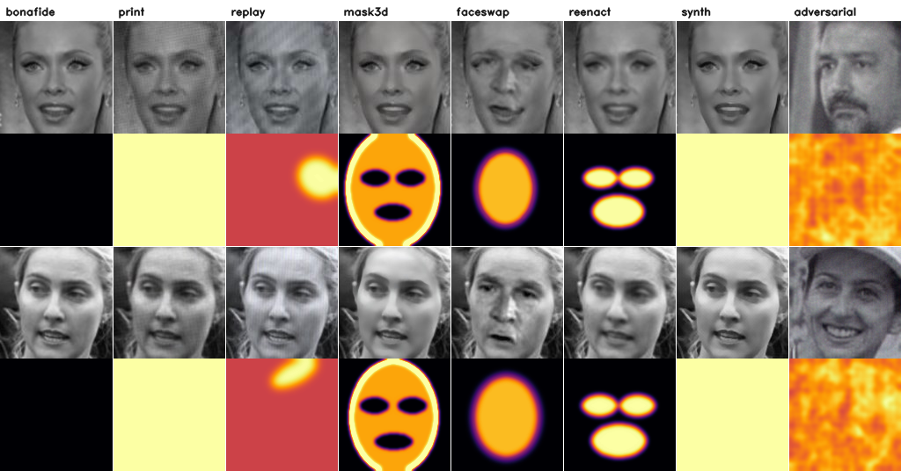
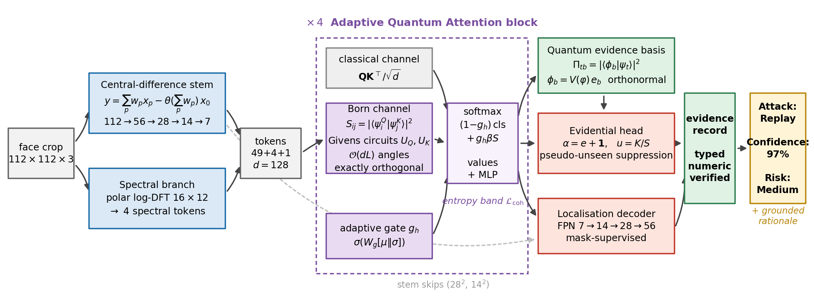
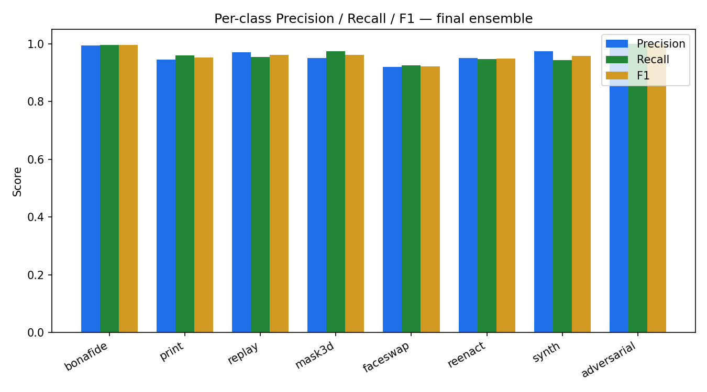
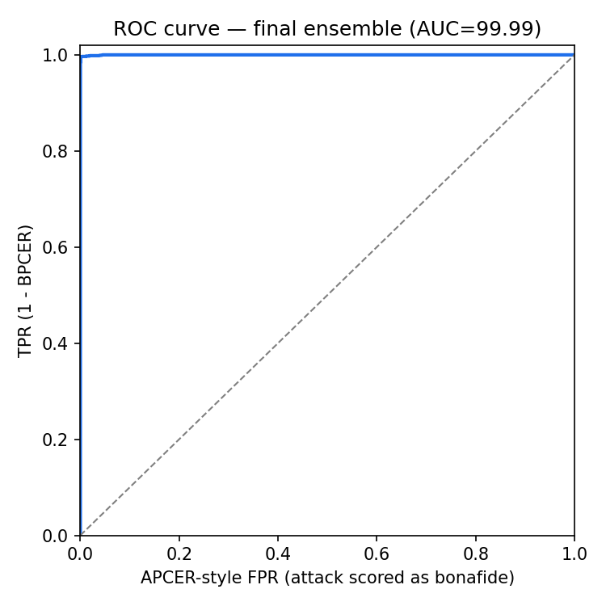
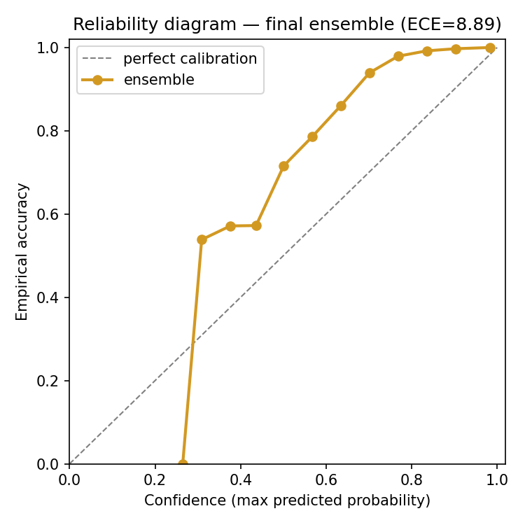
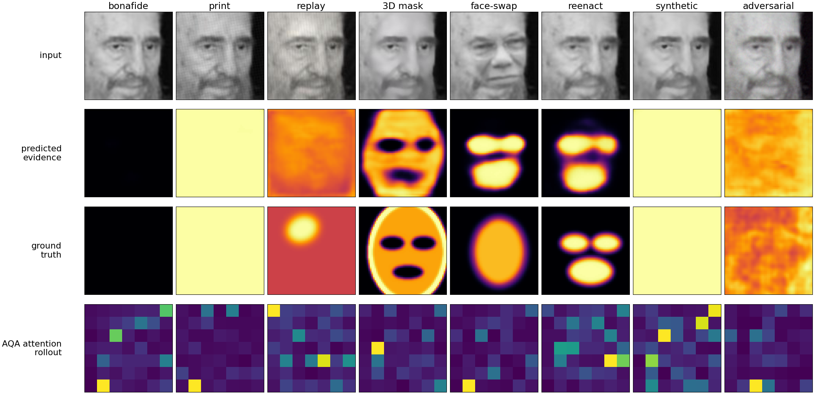

An explainable hybrid vision transformer that classifies a face image into 8 classes. For each decision it also reports its uncertainty, shows where the attack evidence is, and writes an explanation built only from its own measured outputs.
Upload a face image or pick a test image. The trained model (best single checkpoint, 94.58% test accuracy) runs in this browser tab and shows the attack type, confidence, risk, uncertainty, where the evidence is, and its written explanation.
Test images are 128 × 128 benchmark crops chosen by position in the test set, not by result. They go through exactly the processing used to measure accuracy. Other photos go through face detection first, as in the Python demo.
Face recognition systems face two kinds of attack that are usually handled by separate detectors. X-UAD handles both in one model, with one decision and one audit trail.

Real faces from LFW (13,233 images, 5,749 people). Attacks are synthesised by our code, and the adversarial class is crafted with PGD. 33,600 images, balanced across 8 classes.
19,200 / 4,800 / 9,600 train / validation / test. Identity-disjoint: no person appears in more than one split.
Existing unified detectors give one uncalibrated score, no localisation for digital attacks, and no explanation that can be checked against the decision. X-UAD adds all three in one forward pass.
Read left to right. One face crop goes in, and one forward pass produces the attack type, uncertainty, a heatmap and an explanation.

Protocol P1: all 8 classes seen in training, evaluated on the 9,600-image test set. The ensemble's gain over the best single model is statistically significant (McNemar p < 0.000001).
| Accuracy (8-class) | 96.24% |
| Macro-F1 | 96.24% |
| AUC (attack vs genuine) | 99.99% |
| ACER | 0.50% |
| APCER / BPCER | 0.58% / 0.42% |
| EER | 0.33% |
| Genuine-face recall | 99.58% |
| Errors | 361 / 9,600 |
| Class | Type | Precision | Recall | F1 |
|---|

Rows are the true class and columns the predicted class. Correct predictions are on the diagonal. Darker cells mean more images.
Largest remaining confusions: synth → mask3d (57), reenact → faceswap (52), faceswap → reenact (47), faceswap → print (30), replay → print (29). Synth and mask3d both use bilateral-filter smoothing in the synthesiser, so part of this overlap comes from the dataset design.


The localisation head draws a heatmap of the attacked region. It is trained against the real pixel mask for both physical and digital attacks, not a depth-map proxy.

Rows: input image, the model's predicted evidence map, the ground-truth mask, and the attention map. The predicted maps match the ground truth closely for every class. Figure from the earlier experiment round.
| Best single model | replay | mask3d | faceswap | reenact | synth | Overall | |
|---|---|---|---|---|---|---|---|
| IoU | 0.976 | 0.952 | 0.824 | 0.753 | 0.738 | 0.966 | 0.889 |
Saved outputs from the inference script, run on test images with the best single model. Test images were chosen by position in the test set, not by result. Every number in the explanation comes from the model's own output.
Baselines trained by us under identical conditions (earlier experiment round). This is the only direct comparison.
| Method | Accuracy | ACER | AUC | ECE | Loc. IoU |
|---|---|---|---|---|---|
| ViT-Tiny | 51.27% | 49.75% | 73.43% | — | — |
| CDCN++ | 96.18% | 0.71% | 99.92% | 3.44% | 73.5% |
| ResNet-18 | 96.79% | 0.92% | 99.92% | 2.11% | — |
| X-UAD (single model) | 94.53% | 1.46% | 99.89% | 1.94% | 77.8% |
X-UAD gives up about 2 points of raw accuracy to add uncertainty, localisation and explanation, and it has the best calibration and localisation of the group. Later refinements raised the single model to 94.58% and the ensemble to 96.24%, on a slightly different dataset build.
These papers use different datasets, so this is not a head-to-head. It shows that our error rates fall in the same range as published unified detectors.
| Work | Venue | Dataset | Seen ACER | Unseen ACER |
|---|---|---|---|---|
| Facevengers (CLIP+VAE, ViT-L) | ICCVW 2025 | UniAttackData+ | 0.144% | — |
| TeleAI (CLIP contrastive) | ICCVW 2025 | UniAttackData+ | 0.178% | — |
| X-UAD final ensemble | This work | LFW-derived | 0.50% | — |
| UniAttackDetection | IJCAI 2024 | UniAttackData | 0.52% | 22.42% |
| X-UAD best single model | This work | LFW-derived | 0.58% | 31.55%* |
| Auxiliary (Depth) | IJCAI'24 baseline | UniAttackData | 1.13% | 42.98% |
| ResNet-50 | IJCAI'24 baseline | UniAttackData | 1.35% | 34.60% |
| CDCN | IJCAI'24 baseline | UniAttackData | 1.40% | 34.33% |
| FFD | IJCAI'24 baseline | UniAttackData | 2.01% | 44.20% |
| ViT-B/16 | IJCAI'24 baseline | UniAttackData | 5.92% | 33.69% |
*Unseen ACER is the mean over 4 leave-one-attack-out folds from the earlier experiment round. Every method, published or ours, drops sharply on attack types it has not seen; that remains the open problem.
| Capability | UniAttackDetection | FFAA / M2F2-Det | CDCN | X-UAD |
|---|---|---|---|---|
| Physical + digital in one model | yes | partial | no | yes |
| Calibrated uncertainty | no | no | no | yes |
| Localisation for digital attacks | no | rarely | depth proxy | yes |
| Natural-language explanation | no | yes | no | yes |
| Explanation checked against the decision | — | no | — | yes |
Stated up front.